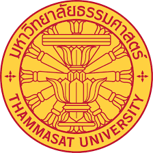

การเรียน
ตลอด 4 ปี ผมตั้งใจจะเรียนเนื้อหาที่มหาลัยจัดไว้ให้
ให้ได้ดีที่สุด ผมเชื่อว่าหลักสูตรของมหาลัยมีความทันสมัยและมีประสิทธิภาพเพียงพอ
แต่ผมสนใจอยากจะศึกษาเพิ่มเติมในด้าน AI หากมหาลัยจะเปิดสอน และสนใจที่จะศึกษาภาษาที่ 3 เพื่อช่วยในการเพิ่มโอกาสการทำงาน

ประสบการณ์ในรั้วมหาลัย
ใน 4 ปีนี้ ผมอยากจะเก็บเกี่ยวประสบการณ์ใช้ชีวิตใน
รั้วมหาลัยให้ได้มากที่สุด อยากเข้าร่วมกิจกรรมต่างๆ หรือทำงานต่างๆที่อาจจะสามารถช่วย
เพิ่มทักษะในด้านอื่นๆ หรือเพิ่ม connection กับผู้คนอื่นๆ